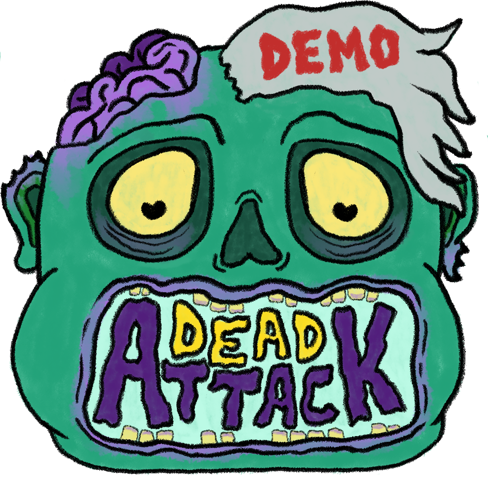

Time Hunt está disponível na Itch.io!
Time Hunt está disponível na Itch.io!
Time Hunt é um jogo plataforma de ação e aventura onde o tempo é o seu verdadeiro inimigo. Derrote monstros, escape de armadilhas, tudo isso enquanto procura por chaves para completar a fase no menor tempo possível.
Use suas habilidades para derrotar os inimigos, use os powerups que eles liberam para auxiliar na sua partida enquanto procura por chaves em todo o mapa antes que o tempo acabe.
Assim como o Dead Attack, este jogo foi criado durante o curso Desenvolvedor Unity do Lucas Busato.
Nesse jogo, criei uma inteligência artificial bem simples para os inimigos, com alguns diferentes ataques e as diversas armadilhas pelas fases, porém, o principal aspecto trabalhado nesse jogo, foi a questão do tempo que o jogador tem durante a fase.

Proficiências
❯
Responsabilidades
❯